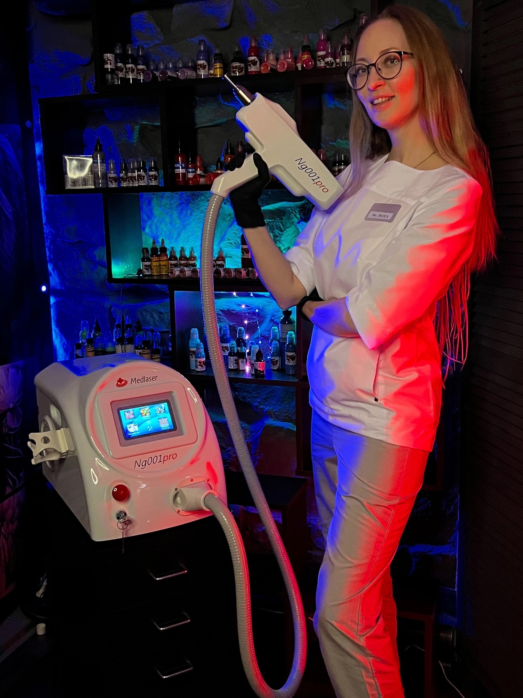
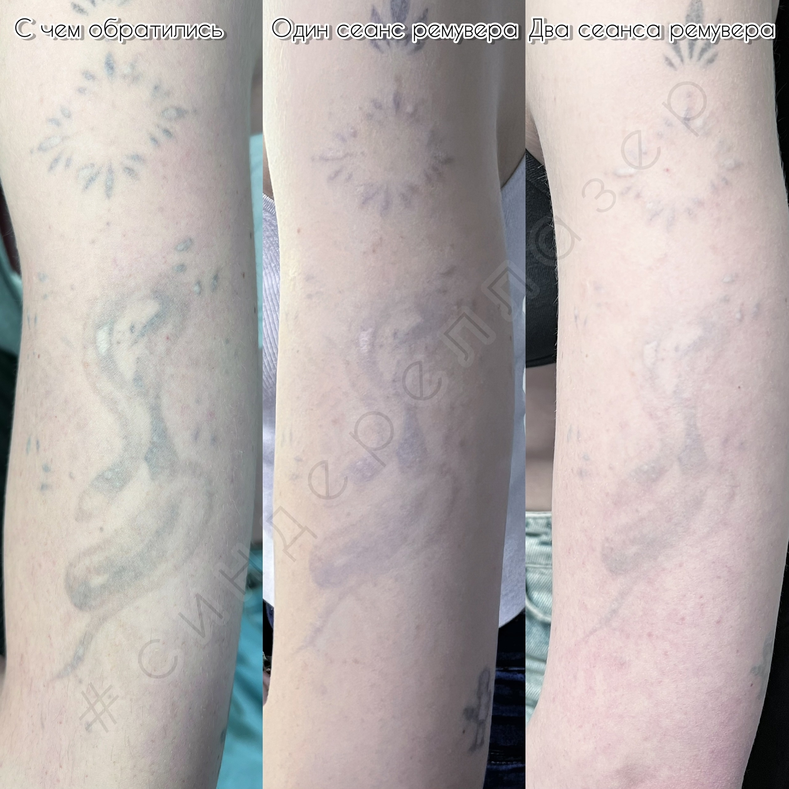
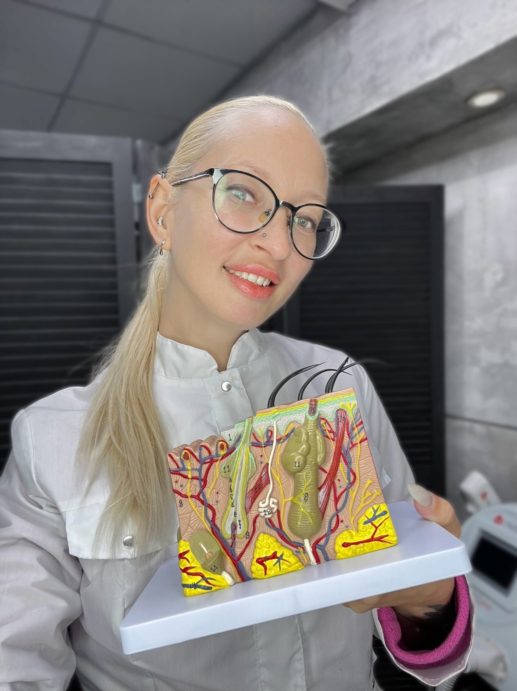

До курса наша ученица Майя Синдер, мастер по удалению татуировок из Екатеринбурга, была как корабль без компаса — не знала, как привлечь клиентов и боялась конкуренции. После обучения Майя научилась доносить свою ценность, и ее доход вырос с 20 до 200 тысяч в месяц, а клиентов стало по 10 в день! Теперь она уверена в своих силах, занимается любимым дорогостоящим хобби и много путешествует по России. За год заработала около полутора миллионов на удалении татуировок.

Мы взяли у нее короткое интервью:
— Майя, расскажи, что было до курса? Сколько клиентов, как их приходилось искать?
— Я только начинала, не знала, что и как правильно делать. Работала администратором в тату-салоне. Собственно, мой путь в профессию удаления татуировок и татуажа с этого и начался: я поняла, что людей с портаками дофига, много кто хочет просто перекрыть старые татуировки, а качественно перекрыть часто бывает невозможно из-за плотности вбитого пигмента и много чего ещё. Лучше почистить – подсветлить лазером, а потом уже идти на перекрытие.
Но был сильный страх, что не получится. Таких мастеров в городе, как я, дофига, конкуренция хорошая.
Поэтому до курса было вяленько. Сама звала, всем, кому можно, рассказывала. После курса (а я даже не всё прошла, прикиньте!) — каааак оно завертелось. Если в деньгах: ДО – было максимум тысяч 20 в месяц и это 3-8 клиентов в месяц. Сразу с первых уроков ВК бабло выросла до 50 тысяч и клиентов стало около 20 в месяц. И потом пошло-поехало.
Сейчас у меня 10 клиентов могут в один день прийти, и это норма)

— Крутышка) Какие сомнения были перед покупкой курса вк бабло?
— Никаких! Потому что до этого я смотрела на многих людей и их курсы, но они не производили впечатление надежности. Я понимала, что мне нужны подобные знания, осталось выбрать того, кто мне их даст.
И тут я натыкаюсь на Евгению Брун, подписываюсь, читаю посты, понимаю, что мне заходит и стиль, и подача. Смотрю, сколько стоит, занимаю денег и покупаю. Всё!
— Класс) Почаще бы так)) Скажи, на каком уроке остановилась? Почему? Насколько трудно было изучать уроки и с чем были сложности, если были?
— Уроки изучать было нетрудно. А про майонез и пипец — прям отдельный респект за подачу материала.
Трудно было пойти и посадить себя за домашку)) Я не люблю онлайн-обучения и заочки, потому что ленюсь, и я это знаю))
Остановилась на каком именно уроке — не помню, но точно на создании рекламного кабинета и дальше, где про рекламу.
— А остановилась почему? Расскажешь?
— Остановилась потому, что после упаковки группы, настройки и постов люди сами стали потихоньку приходить.
Но с учётом того, что я вложила очень много в принципе в обучение профессии – само обучение искусству удаления татуировок и татуажа + медицинское образование + курсы по продвижению, брать мало за услугу совсем не хотелось.
А потом в каком-то уроке услышала: надо донести ценность. И я как начала её доносить! И вот все пошло - поехало). Остановилась на уроках с рекламой, потому что решила нанять отдельного человека, который в специфике именно моей сферы уже работал на аналогичном проекте и разбирается в нюансах. Он и ведёт мне всю рекламу. Поэтому я остановилась на курсе именно на рекламе.
Из-за своей лени я и подумала: нафига мне реклама, если мне это сделают. Но, поверьте, рекламы бы не было без группы и её наполнения, без умения вести диалог, выяснять пипец и давить на боли, без умения писать посты и, в целом, пилить контент. А это всё я получила и научилась именно на курсе. Ну и сейчас всеже планирую вернуться к урокам и изучить рекламу)

— Ты ведь с куратором уроки проходила? Каково было работать с куратором? Помогало? Мотивировало?
— Помогало. Потому что я ленивая жопка, и тут хоть какая-то ответственность перед человеком была, что уроки надо посмотреть и домашку выполнить. Кроме того, она очень помогала разбирать непонятные вопросы и направляла в нужное русло.
— Огонь) А можешь поделиться, как изменилась жизнь после увеличения доходов? Что-то может купила, куда-то съездила? Какие-то мечты получилось исполнить?
— О! Теперь моя корзина на Вайлберриз всегда пустая)) В плане: я захотела — я пошла да купила. Никаких отложек и вотэтовсё.
Чувствую себя, конечно, гораздо увереннее. Появилась возможность выделить деньги на поездки. Если бы ещё не было бы нужды закрывать большой кредит (делала капитальный ремонт в трёшке), было бы вообще замечательно :)
А так могу спокойно позволить себе траты на любимое хобби. Я косплеер. Очень дорогое хобби, я вам скажу. Меньше 20к ни один костюм не выходит. Соответственно: больше заработок — круче костюмы.
— А куда успела сьездить?
— Питер, Москва, Пермь, Уфа, Челябинск, Магнитогорск... У меня нет загранпаспорта, поэтому катаюсь по России.
— Огонь) В России много интересных и красивых мест, есть что посмотреть, где побывать
Ну и загран паспорт сейчас не помешает. Но это дело времени, я думаю) Накатаешься по России, потом)
Все остался последний вопрос, иы говорила что в месяц выходит до 200 к у тебя, а можешь сказать сколько вот за помледний год вышло?
— Точно не скажу, до сих пор не веду точного подсчета) Но в районе полутора миллионов только с удаления татуировок)
— Спасибо тебе за ответы Была очень рада с тобой пообщаться)
Желаю тебе успехов и роста в этом году!